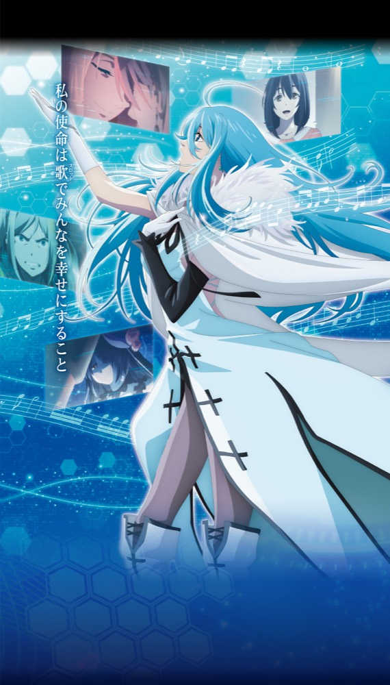

スロット Vivy -Fluorite Eye's Song-
ACCESS CHANCEから初期100枚の差枚数ATへ。3Gバトルとレア役再生で報酬を重ねる一本道。
- 導入
- 2026年11月
- メーカー
- 大都技研
- 分類
- パチスロ
主要スペック
周期・ACCESS CHANCE・ACCESS CHANCE EXからPROJECT SINGULARITYへ入り、レア役再生、3GのSINGULARITY BATTLE、1Gの報酬決定、OVER DRIVE、マツモトチャンス、2種類のBONUS、Fluorite Eye's Strikeまでを機種専用画面で体験できます。
- ATは初期100枚・純増約3.2枚/G
- SINGULARITY BATTLEは約1/33・勝利期待度約45%
- FESは15G・期待獲得約1600枚
スロット Vivy -Fluorite Eye's Song-の見どころと計算条件
周期・ACCESS CHANCE・ACCESS CHANCE EXからPROJECT SINGULARITYへ入り、レア役再生、3GのSINGULARITY BATTLE、1Gの報酬決定、OVER DRIVE、マツモトチャンス、2種類のBONUS、Fluorite Eye's Strikeまでを機種専用画面で体験できます。
スマスロ Vivyを数字で早分かり
ACCESS CHANCE・周期から差枚数ATへ入り、レア役再生、3Gバトル、差枚数上乗せ、BONUS、Fluorite Eye's Strikeまでを機種専用で記録します。
30秒で分かるスマスロ Vivy
レア役を15G記憶して再生し、初期100枚の差枚数ATで3Gバトルと1G報酬決定を重ねる、上位ATなしの上乗せ型ATです。
こんな遊び方に向いている
- 3Gバトルの勝敗をPUSHで開きたい
- 差枚数上乗せとOVER DRIVEを楽しみたい
- プレミアム特化FESを狙いたい
遊ぶ前に確認したいこと
- ATは初期100枚・純増約3.2枚/G
- バトルは約1/33・平均勝率約45%
- 未公表の入口・報酬選択率は体験用代表値
通常時は周期とACCESS CHANCE
通常時は周期到達やレア役からACCESS CHANCEを目指します。ACCESS CHANCEは5G×セット継続型で、1セット平均約61pt、毎ゲーム5pt以上を獲得します。
ACCESS CHANCE EXは1セット10G、AT期待度約50%。レア役成立ならAT濃厚です。通常AC・AC EX・周期直撃を分け、最後のPUSHでPROJECT SINGULARITY当落を表示します。
レア役を記憶して再生
レア役再生は過去15Gのレア役を記憶し、マツモト図柄揃いで再生する本機の中心機能です。再生レア役と同じレア役が重なるとSINGULARITY FLASHとなります。
AT開始時はレア役再生が必ず発生。専用進行では再生レベル、再生回数、SINGULARITY FLASHを個別に表示します。
PROJECT SINGULARITYと3Gバトル
ATは初期100枚、純増約3.2枚/Gの差枚数管理。SINGULARITY BATTLEは約1/33、3G、平均勝利期待度約45%です。
リプレイ成立時は勝利期待度35%以上、オフィーリアなら75%。対応レア役・BAR揃い・マツモト揃いは勝利濃厚として、3Gを進めたあとPUSHで勝敗を開きます。
勝利後は1GのSINGULARITY CHANCE
バトル勝利後は1GのSINGULARITY CHANCEで、3桁以上の差枚数上乗せ、OVER DRIVE青・赤・PREMIUM、マツモトチャンスのいずれかを決定します。
OVER DRIVEは3回失敗するまで継続し最大10回上乗せ。平均上乗せは青約180枚、赤約340枚、PREMIUM約1000枚です。マツモトチャンスは5G＋α、平均約710枚です。
BONUSとFluorite Eye's Strike
VIVY BONUSとEPISODE BONUSはいずれも30G。VIVY BONUS中はレア役で上乗せ、EPISODE BONUS後はOVER DRIVEへ進みます。
Fluorite Eye's Strikeは15G、期待獲得約1600枚のプレミアム特化ゾーンです。終了後はオフィーリアとのバトルへ進みます。本機に上位ATはないため、FESを上位ATとは表記しません。
固定条件と簡略化する範囲
- 約31G/50枚・1,000円46枚貸し・5.2枚交換で固定
- 設定1〜6のAT初当り・出玉率を公開値で反映
- AC・AC EX・差枚数AT・3Gバトル・報酬・BONUS・FESを機種専用進行
- 入口選択率・敵選択率・報酬の未公表部分は体験用代表値
- 19,000枚到達時はコンプリート表示
平均Gと投資目安の計算
掲載するPROJECT SINGULARITY初当り約1/276.5は設定1基準です。当サイトでは50枚あたり31G、1,000円46枚貸しの固定条件から、設定1基準の平均投資目安を約9,700円と計算します。
シミュレーターでは設定1〜6を均等抽選します。設定1〜6で公開されている初当り値を個別に使います。公開されていない特化ゾーン・上位到達率の設定差は加えません。 換金は5.2枚交換で固定し、結果とランキングに設定を表示します。
シミュレーション結果の見方
当るまでACCESS CHANCE・周期とAT当選ゲーム数
AT中レア役再生、3Gバトル、差枚数上乗せ
プレミアムBONUS・OVER DRIVE・FESへの到達（上位ATは非搭載）
最終収支差枚と5.2枚交換の収支目安
結果は自動で「マイ記録」に保存され、同じ機種を何回試したか、最高収支、勝率をあとから確認できます。
簡易シミュレーターについて
ACCESS CHANCE／周期・PROJECT SINGULARITY・上位AT非搭載の流れを固定条件で体験できます。JavaScriptを有効にすると、この位置にシミュレーター、演出、マイ記録、機種別ランキングが表示されます。
結果は娯楽・確率理解のための参考表示です。金銭的価値や交換価値はなく、実際の勝敗や収支を保証しません。18歳未満の方の利用はお控えください。
スマスロ Vivyのよくある質問
スマスロ Vivyはどんな台？
周期・ACCESS CHANCE・ACCESS CHANCE EXからPROJECT SINGULARITYへ入り、レア役再生、3GのSINGULARITY BATTLE、1Gの報酬決定、OVER DRIVE、マツモトチャンス、2種類のBONUS、Fluorite Eye's Strikeまでを機種専用画面で体験できます。 ATは初期100枚・純増約3.2枚/Gが主な確認ポイントです。
スマスロ Vivyの平均投資目安は？
設定1基準のPROJECT SINGULARITY初当り約1/276.5と、50枚あたり31G・46枚貸しの固定条件から、平均9,700円を目安として表示します。実際の設定や遊技状況で結果は変わります。
設定とゲームの流れはどう抽選する？
開始時に設定1・2・3・4・5・6から1つを均等抽選し、ACCESS CHANCE・周期、初期100枚のPROJECT SINGULARITY、3Gバトル、差枚数上乗せ、BONUS、FESを順番に判定します。上位ATは搭載していません。
収支はどう計算する？
1,000円46枚貸し・5.2枚交換の固定条件で投資、換金、収支目安を計算します。実店舗の再プレイ、持ちメダル、端数処理は含みません。